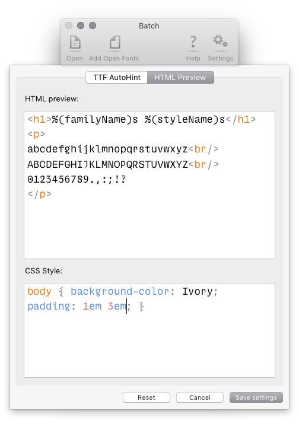

Batch
Batch is a RoboFont extension to generate binary fonts in batch.
- supports UFO, OpenType (TTF/CFF) and designSpace files as input
- generates .otf .ttf .pfa .vfb .woff .woff2 .eot .svg & variable fonts
Table of contents
Once installed, Batch will add itself to the File menu:

Fonts
Use the Fonts section to choose which fonts to use as input.

Add fonts by dragging files into the list.
The following types of input files are supported:
- UFO fonts
- OpenType fonts (CFF/TTF)
- UFOs folder
- designSpace file
Options
- add open fonts
- Use the toolbar button *Add Open Fonts* to add all open fonts to the list.
- UFOs folder
- If a folder is provided, Batch will search for all UFOs inside it.
- designSpace files
- If a designSpace file is provided, it will be expanded into all its masters and instances, and the instances can be generated.
Web fonts
Use the Web fonts section to generate webfont formats and related test files.

The following webfont formats are supported:
- .otf
- .ttf
- .woff
- .woff2
- .eot
- .svg
Options
- woff
- Creates WOFF metadata based on the info in the font, if available.
- woff2
- Does not create any metadata – the fonts are simply compressed.
- preserve hints
- Check this option to prevent autohinting of binary TTF fonts.
- suffix
- Add a suffix to the output file names. The suffix can contain date time formatting.
- ttfautohint
- Opens a sheet to choose ttfautohint settings.
- generate html
- Generates a HTML preview with some simple presets.
ttfautohint
TrueType autohinting with ttfautohint is available when generating OpenType-TrueType webfonts.
Click on the gears icon to open the ttfautohint settings.

See the ttfautohint documentation for details about each setting.
Generate HTML
If Generate HTML is selected, Batch will generate a simple HTML+CSS test page to preview the webfonts.

Use the top text area to edit the HTML code, and the bottom one to edit the CSS.
The HTML preview can replace %(familyName)s and %(styleName)s by the corresponding font info values retrieved from the font.
Batch generate
Use the Batch Generate section to generate desktop fonts, and to convert fonts to VFB format.

The following binary output formats are supported:
- .otf
- .ttf
- .pfa
- .vfb
- variable fonts
Note: Generating .vfb fonts requires ufo2vfb.
Options
- decompose
- remove overlap
- autohint
- release mode
- suffix
- Add a suffix to the output file names. The suffix can contain date time formatting.
Variable Fonts
Use the Batch Generate section to generate variable fonts.
Note: It is required to provide a designSpace file.

Batch will try to optimize the designSpace data by performing the following actions:
- Add off-curve points where needed to make contours compatible.
- Add axes to the design space if they are missing.
- Add missing glyphs by generating them from the design space.
- Add kerning pairs to make kerning compatible.
Options
- autohint
- ...
- interpolate to fit axes extremes
- ...
Binary Merge
Use the Binary Merge section to merge specific tables from a source.
This option is available only when a UFO is provided, and when the UFO has the source path in the font.lib.

Binary Merge will use the output settings selected in the Batch Generate section.
Settings
Click on the gears icon in the toolbar to open the Settings sheet.

- threaded
- ...
- export in subfolders
- Create subfolders for different types of file.
- keep file names
- Use the same file names as the input fonts.